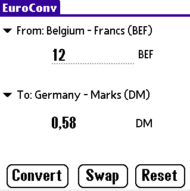

EuroConv
This program allows the conversion from (and to) the Euro currency to (and from) the previous European currencies.
This program is FREE. Two are the available versions: PalmOS (v. 0.9) and MS Windows (v. 1.0).
PalmOS (3.x - 4.x - 5.x)
Download:
PRC file (10K)
ZIP file (5K)
WARNING It's strongly recommended to uninstall previous versions before upgrading.
Screenshots
|  |
History
(v. 0.9) New improved interface. The last selections are now saved on exit. Fixed swapping bug. New icons.
(v. 0.5) Higher numbers are allowed.
(v. 0.4) New user interface. Currencies are listed in alphabetic order. Fixed minor bugs. License is now embedded into the application.
(v. 0.3) First public release
MS Windows (98/ME - NT4.0/2000/XP)
Download:
Screenshots
|
|
Contact info:
If you have questions, suggestions or if you want to report a bug: feranick @ hotmail.com